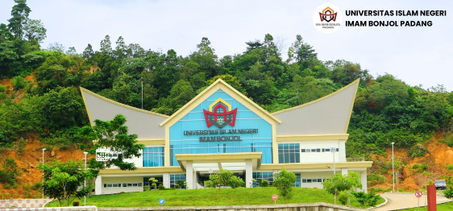

Profil UIN IB Padang

Universitas Islam Negeri (UIN) Imam Bonjol Padang merupakan perubahan bentuk dari Institut Agama Islam Negeri (UIN) Imam Bonjol berdasarkan Peraturan Presiden Nomor 35 Tahun 2017. Secara historis, keberadaan Universitas Islam Negeri Imam Bonjol Padang dimulai dengan keberadaan Fakultas Tarbiyah Padang Cabang UIN Syarif Hidayatullah Jakarta yang lahir berdasarkan SK Menteri Agama Nomor: 92 Tahun 1963 tanggal 21 September 1963. Fakultas Tarbiyah inilah yang menjadi cikal bakal didirikannya UIN Imam Bonjol Padang. Tiga tahun kemudian, tepatnya tanggal 29 Nopember 1966, berdasarkan SK Menteri Agama Nomor: 77 Tahun 1966 tanggal 21 November 1966 diresmikanlah berdirinya UIN Imam Bonjol Padang oleh Menteri Agama Prof. K.H. Syaifuddin Zuhri. Dengan demikian tanggal tersebut menjadi hari lahir UIN Imam Bonjol Padang, yang waktu itu memiliki 4 fakultas dan 5 jurusan, yaitu, 1) Fakultas Tarbiyah Jurusan Pendidikan Agama dan Jurusan Tadris di Padang, 2) Fakultas Syari’ah Jurusan Qadha (Hukum Islam) di Bukittinggi, 3) Fakultas Adab Jurusan Sastra Arab di Payakumbuh, dan 4) Fakultas Ushuluddin Jurusan Perbandingan Agama di Padang Panjang.
Fakultas
Pada perkembangannya, hingga saat ini konversi
menjadi Universitas Islam Negeri (UIN), universitas
memiliki 6 fakultas dengan 25 jurusan/program studi
yang terdiri dari:
Fakultas Adab dan Humaniora, dengan Program Studi
(a) Bahasa dan Sastra Arab (S1), (b) Sejarah
Peradaban Islam (S1), (c) Ilmu Perpustakaan (D3),
dan (d) Ilmu Perpustakaan dan Informasi Islam (S1);
Fakultas Dakwah dan Ilmu Komunikasi, dengan Program
Studi (a) Komunikasi dan Penyiaran Islam (S1), (b)
Bimbingan dan Konseling Islam (S1), (c) Manajemen
Dakwah (S1), dan (d) Pengembangan Masyarakat
Islam(S1);
Fakultas Syariah, dengan Program Studi (a) Hukum
Keluarga Islam (Al-Ahwal asy-Syakhshiyah) (S1), (b)
Perbandingan Mazhab (S1), (c) Hukum Ekonomi Syariah
(Mu’amalah) (S1), (d) Hukum Tatanegara (Siyasah
Syar’iyyah) (S1);
Fakultas Tarbiyah dan Keguruan, dengan Program Studi
(a) Pendidikan Agama Islam (S1), (b) Pendidikan
Bahasa Arab (S1), (c) Manajemen Pendidikan Islam
(S1), (d) Pendidikan Guru Madrasah Ibtidaiyah (S1),
(e) Tadris Bahasa Inggris (S1), (f) Tadris Ilmu
Pengetahuan Alam/ Fisika (S1), (g) Tadris Matematika
(S1), (h) Tadris Ilmu Pengetahuan Sosial/ Sejarah
(S1), dan (i) Bimbingan dan Konseling Pendidikan
Islam (S1), serta (i) Pendidikan Profesi Guru
(Profesi);
Fakultas Ushuluddin dan Studi Agama, dengan Program
Studi (a) Aqidah dan Filsafat Islam (S1), (b) Studi
Agama-Agama (S1), (c) Ilmu al-Qur`an dan Tafsir
(S1), (d) Psikologi Islam (S1), (e) Ilmu Hadis (S1),
dan (f) Tasawuf dan Psikoterapi (S1);
Fakultas Ekonomi dan Bisnis Islam, dengan Program
Studi (a) Ekonomi Syariah (S1), (b) Manajemen
Perbankan Syariah (D3), (c) Akuntansi Syariah (S1),
(d) Perbankan Syariah (S1), dan (e) Manajemen Bisnis
Syariah (S1);
Fakultas Sains dan Teknologi, dengan Program Studi
(a) Matematika (S1), (b) Sistem Informasi (S1);
Selain jenjang S1 di atas, pada tahun 1994 didirikan
pula jenjang Program Studi Pascasarjana (S2) dengan
Surat Keputusan Menteri Agama Nomor: 287 Tahun 1994
tanggal 1 Agustus 1994, disusul oleh jenjang S3 atau
Program Doktor. Program studi pascasarjana yang ada
di UIN Imam Bonjol Padang, terdiri dari prodi S2-
Pendidikan Agama Islam, S2-Pendidikan Bahasa Arab,
S2-Ekonomi Syariah, S2- Hukum Keluarga (AS),
S2-Pengembangan Masyarakat Islam, S2-Sejarah
Kebudayaan Islam, S2-Ilmu Hadist, S2-Ilmu Al-Quran
dan Tafsir, dan prodi S3-Pendidikan Islam, S3-Hukum
Islam.
Peningkatan Kualitas
Meningkatkan kualitas pengelolaan, pelayanan
informasi publik dan dokumentasi.
Fungsi
a. Perumusan kebijakan Teknis bidang
Fasilitas dan layanan UIN Imama Bonjol
Padang;
b. Penyelenggaraan urusan Akademik dan Kepegawaian umum Kampus;
b. Penyelenggaraan urusan Akademik dan Kepegawaian umum Kampus;
c. Pembinaan dan pelaksanaan tugas bidang
Kemahasiswaan dan Akademik;
d. Melaksanakan kesekretarisan Kampus; dan
d. Melaksanakan kesekretarisan Kampus; dan
e. Pelaksanaan tugas lain yang diberikan
oleh Rektor sesuai dengan tugas dan
fungsinya.
Tujuan
Tujuan yang hendak dicapai UIN Imam Bonjol Padang
yang
telah menyelaraskan apa yang harus dilaksanakan sesuai dengan sumber daya
dan kemampuan yang dimiliki serta kebijakan yang diambil.
telah menyelaraskan apa yang harus dilaksanakan sesuai dengan sumber daya
dan kemampuan yang dimiliki serta kebijakan yang diambil.
Sasaran
Secara keseluruhan sasaran dan program UIN Imam
Bonjol Padang dapat
dijabarkan sebagai berikut :
1. Meningkatnya kesadaran hukum Keluarga besar UIN di bidang pelayanan Fasilitas;
2. Terlayaninya Mahasiswa dengan pelayanan Prima;
3. Terwujudnya sumber informasi Akademik dan Kemahasiswaan yang akurat bagi Publik dan Pemerintah;
4. Meningkatnya Tertib administrasi Fasilitaas Kampus;
5. Terpenuhinya sarana dan Prasarana pendukung UIN Imam Bonjol Padang yang terintegrasi dan unggul.
1. Meningkatnya kesadaran hukum Keluarga besar UIN di bidang pelayanan Fasilitas;
2. Terlayaninya Mahasiswa dengan pelayanan Prima;
3. Terwujudnya sumber informasi Akademik dan Kemahasiswaan yang akurat bagi Publik dan Pemerintah;
4. Meningkatnya Tertib administrasi Fasilitaas Kampus;
5. Terpenuhinya sarana dan Prasarana pendukung UIN Imam Bonjol Padang yang terintegrasi dan unggul.
Visi
menjadi universitas Islam yang kompetitif di ASEAN
untuk membangun masyarakat yang saleh, moderat,
cerdas, dan unggul pada tahun 2040.
Misi
1. Memperkuat moderasi beragama dan kerukunan umat
beragama
2. Meningkatkan produktivitas dan daya saing pendidikan
3. Memantapkan tata kelola kepemerintahan yang baik (good governance)
2. Meningkatkan produktivitas dan daya saing pendidikan
3. Memantapkan tata kelola kepemerintahan yang baik (good governance)